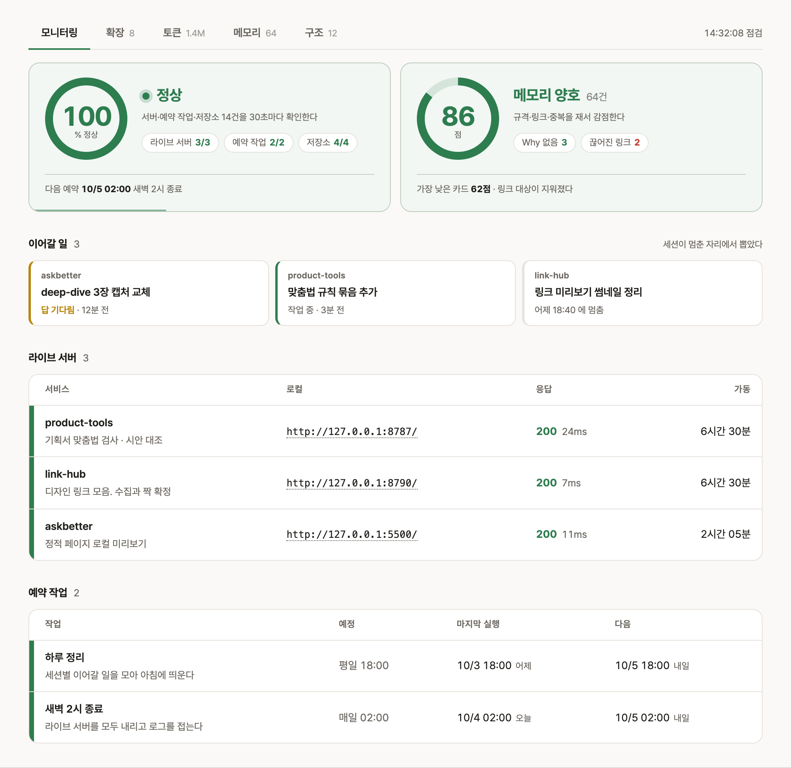
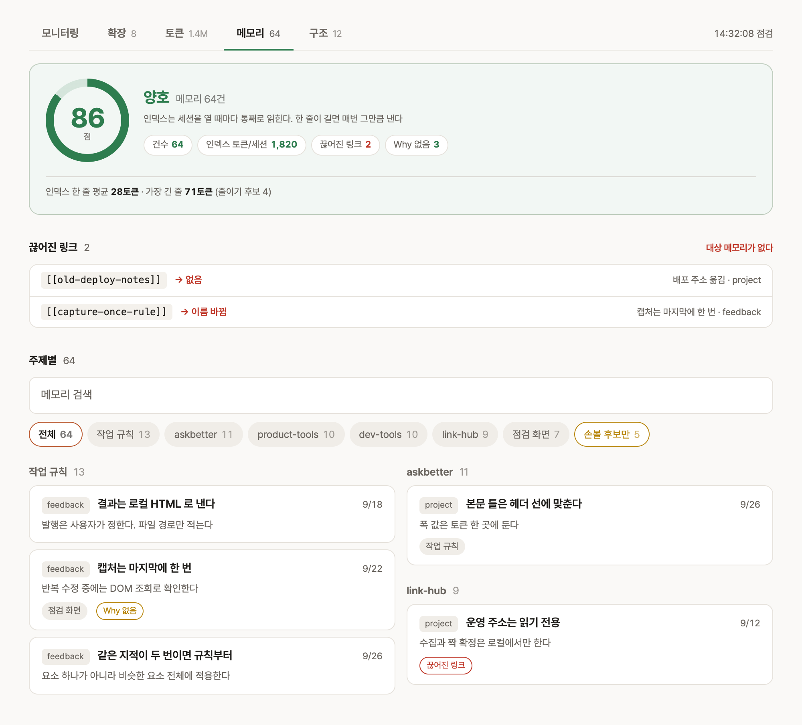
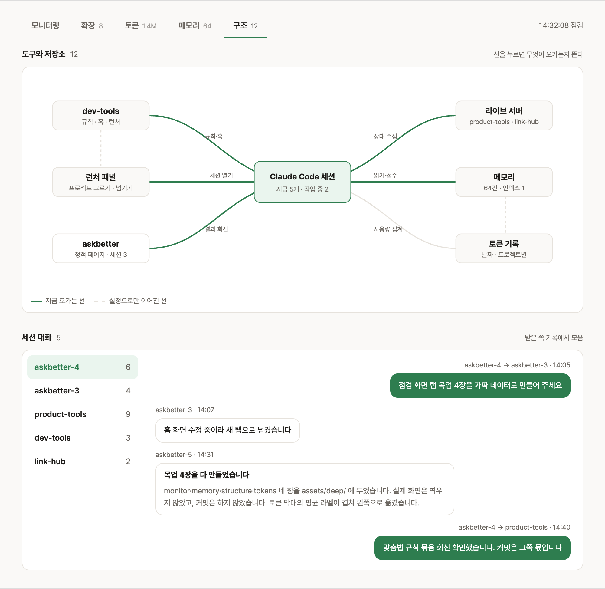
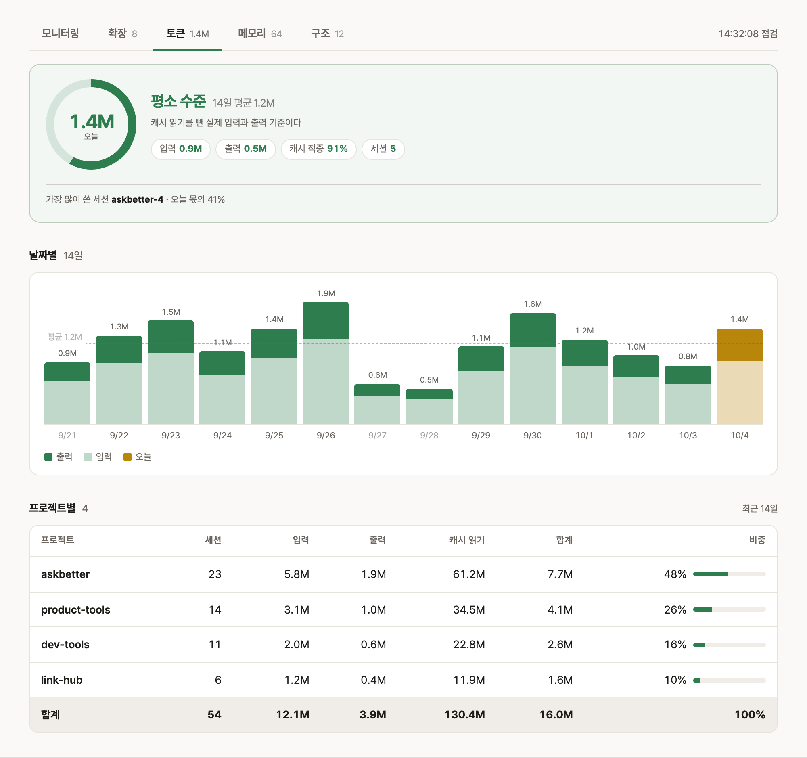

AI 세션 여러 개와 일하며
정리한 작업 방식
케이스 스터디에서 결과만 적은 작업 방식을 풀어 쓴 글이에요. 하루 작업 흐름에서 시작해 점검 화면의 탭 순서대로 다뤄요.
하루 작업은 점검 화면에서 시작해 점검 화면으로 끝난다
하루 작업은 어떤 순서로 진행되나요?
AI 세션 여러 개가 동시에 돌아가도 어느 일이 어디까지 됐는지 한 화면에서 확인할 수 있게 하루 작업 순서를 정했어요. 하루는 점검 화면을 여는 것으로 시작해서, 끝내지 못한 일을 점검 화면에 등록하는 것으로 끝나요. 단계마다 어느 탭에서 확인하는지는 아래와 같아요.
왜 점검 화면을 중심에 두었나요?
AI 세션이 늘어나자 어느 일이 어디까지 됐는지 제 기억만으로는 따라갈 수 없었어요. 세션마다 하던 일, 예약 작업 결과, 팀에 공유한 도구 상태, AI가 기억하는 내용을 각각 다른 곳에서 확인해야 했어요. 그래서 이 내용을 점검 화면 한 곳에 모으고, 탭마다 무엇을 확인하는지 하나씩 정했어요. 이 페이지의 다음 장도 탭 순서를 따라가요.
| 탭 | 확인하는 질문 | 다루는 장 |
|---|---|---|
| 모니터링 | 지금 고칠 것이 있나요? | 2장 |
| 메모리 | AI가 기억하는 내용이 정확한가요? | 3장 |
| 구조 | 어느 세션이 무엇을 맡았고, 누구에게 무엇을 넘겼나요? | 4장 |
| 토큰 | 어디에 토큰을 많이 썼나요? | 5장 |
| 확장 | 설치한 플러그인과 MCP가 최신이고, 어떤 기능을 쓸 수 있나요? | 2장 자세히 보기 |
도구가 멈추면 바로 알 수 있게 점검 화면을 만들었다
점검 화면을 만든 계기는 무엇인가요?
팀에 공유한 링크 검색 도구가 9분 사이에 세 번 끊겼다가 복구된 일이 있었어요. 자동으로 복구돼서 끊긴 줄 아무도 몰랐어요. 끊긴 것을 모르면 같은 문제가 반복돼도 원인을 찾을 수 없어요. 그래서 제 맥에서 도는 도구와 예약 작업, 팀에 공유한 도구가 정상인지를 한 화면에서 확인하는 점검 화면(status-board)을 만들었어요.
처음에는 그날 첫 AI 세션을 열 때 점검 화면도 같이 띄웠어요. 그런데 이렇게 하면 터미널을 열기 전에는 점검 화면을 볼 수 없어서, 맥을 켜면 서버와 크롬 창이 자동으로 뜨게 바꿨어요. 지금은 업무를 시작할 때 이미 떠 있고, 퇴근할 때까지 브라우저 탭 하나에 켜 둬요.
점검 화면을 보고 있지 않을 때는 문제를 어떻게 알아차리나요?
탭 아이콘과 탭 제목으로 상태를 알려요. 정상일 때는 아이콘이 움직이지 않고 제목에는 이름만 보여요. 정상일 때도 아이콘이 움직이면 문제가 생겨 깜빡여도 알아채기 어려워요. 평소에는 조용하기 때문에, 다른 탭에서 기획서를 보다가도 아이콘 색이 바뀌거나 깜빡이면 바로 알 수 있어요.
| 상태 | 탭 아이콘 | 탭 제목 |
|---|---|---|
| 정상 | 초록 체크, 움직이지 않음 | 이름만 |
| 경고 | 노란 느낌표, 0.9초 간격으로 천천히 깜빡임 | 이름 뒤에 문제 요약 |
| 장애 | 빨간 느낌표, 0.6초 간격으로 빠르게 깜빡임 | 이름 뒤에 문제 요약 |
주소가 열리면 정상이라고 봐도 되나요?
아니에요. 주소는 열리는데 기능은 멈춰 있던 도구가 며칠 동안 정상으로 표시된 적이 있어요. 그 일 뒤로 주소가 열리는지와 기능이 실제로 동작하는지를 따로 확인해요. 매일 09:20에 팀원이 쓰는 기능 17가지를 한 번씩 실제로 실행해 보기 때문에, 출근해서 화면을 열면 기능까지 확인한 결과를 바로 볼 수 있어요.
화면에는 무엇을 남기고 무엇을 뺐나요?
화면을 열자마자 지금 고칠 것이 있는지 알 수 있어야 해서, 그 판단에 필요한 값만 남겼어요. 표마다 무엇을 확인하는 표인지 하나로 정하고, 거기에 필요 없는 값은 빼거나 접어 뒀어요. 색도 판단이 필요한 곳에만 썼어요. 플러그인·MCP처럼 하루 한 번 확인하면 되는 값은 다른 탭으로 옮겼고, 그 탭에서 생긴 문제는 첫 화면의 문제 건수에 함께 더해요.
첫 화면은 위에서부터 아래 순서로 확인해요.

| 화면 영역 | 무엇을 알려 주나요 |
|---|---|
| 맨 위 점수 | 점검하는 항목 중 정상인 비율이에요. 100이면 전부 정상이고, 아래 칩에서 어느 묶음이 몇 개 중 몇 개 정상인지 보여 줘요. |
| 라이브 서버 | 팀원이 링크로 여는 도구예요. 로컬은 제 맥 안에서 여는 주소, 고정주소는 팀원이 여는 주소예요. 200은 페이지가 정상으로 열렸다는 뜻이고, 옆 숫자는 응답에 걸린 시간이에요. |
| 가동 | 도구가 마지막으로 켜진 뒤 흐른 시간이에요. 가동 시간이 이전보다 줄었다면 도구가 꺼졌다가 다시 켜진 것이라, 도구 이름 옆에 '재시작' 표시를 10분 동안 붙여요. 9분 사이에 세 번 끊겼던 일도 지금은 이 표시로 알 수 있어요. |
| 예약 작업 | 정해진 시각에 한 번 실행되는 작업이에요. 예정 시각이 지났는데도 실행 기록이 없으면 노란색으로 바뀌어요. |
한 달 반 동안 23일에 걸쳐 커밋 191개로 조금씩 고쳤어요. 기능을 더한 만큼 뺀 것도 많아요. 쓰지 않는 화면이 남아 있으면 필요한 정보를 찾기 어려워서, 한동안 열지 않은 탭은 통째로 지웠고 이미 아는 값을 나란히 보여 주던 표도 뺐어요.
그날 끝내지 못한 일은 어떻게 관리하나요?
예전에는 할 일 문서를 점검 화면에 펼쳐 두었어요. 그런데 목록이 갱신되지 않아 매일 같은 내용이 남아 있었고, 결국 열어 보지 않았어요. 그래서 남은 일마다 등록한 지 며칠 됐는지를 함께 보여 줘요. 세션이 끝내지 못한 일은 점검 화면 맨 위 '이어갈 일'에 등록하고, 무엇을 기다리는지와 등록한 날짜를 같이 표시해요. 사흘이 지나도록 남아 있으면 색이 바뀌어요.
끝난 일은 '완료'로 표시하지 않고 목록에서 지워요. 이 목록은 남은 일만 보여 줘야 해서, 끝난 일이 섞이면 남은 일이 몇 개인지 알기 어려워요. 세션끼리 주고받은 메시지 원문은 구조 탭에 남아 있어서, 목록에서 지운 뒤에도 근거를 찾을 수 있어요.
점검 화면이 상태를 잘못 표시한 적도 있나요?
있어요. 한 번 실행되고 끝나는 작업을 꺼져 있다고 표시하거나, 정상인 원격 연결을 장애로 세기도 했어요. 잘못된 경고가 한 번 나오면 그 뒤의 경고도 믿기 어려워서, 잘못 읽은 값을 하나씩 고쳤어요. 확인할 수 없는 값은 장애로 세지 않고 '측정 불가'로 따로 표시해요. 도구마다 지금 실행 중인지와 다음 부팅 때 자동으로 실행되는지도 나눠서 표시해요.
점검 화면에서 확인하는 대상도 점점 늘었어요. 처음에는 팀에 배포한 도구만 확인했는데, 지금은 AI 사용량과 AI 메모리, 세션끼리 주고받은 메시지까지 확인해요. 다음 장부터는 이 탭들을 메모리, 구조, 토큰 순서로 다뤄요.
탭 구성과 잘못 읽었던 값 자세히 보기
| 탭 | 무엇을 확인하나요 |
|---|---|
| 모니터링 | 서버와 예약 작업, 아침 QA, 아직 올리지 않은 작업이 남은 저장소, 다른 세션이 끝내지 못하고 넘긴 일 목록 |
| 확장 | 설치한 Claude Code 플러그인이 최신인지, 제가 만든 플러그인이 팀원에게 배포한 버전과 같은지. MCP 서버별로 쓸 수 있는 기능, 크롬 확장과 Figma 플러그인 목록 |
| 토큰 | Claude Code에서 쓴 토큰 양을 날짜별로 모아 보여 줌 |
| 메모리 | Claude Code가 기억해 두는 메모 파일을 열어 보고 화면에서 바로 고치거나 지움 |
| 구조 | 도구와 저장소의 관계도, 세션끼리 주고받은 메시지 |
| web-qa | 오늘 실행된 사내 화면 자동 검수 결과. 실패하면 어느 스펙 문서의 어느 항목 때문인지까지 보여 줌 |
| 값 | 잘못 읽은 방식 | 제대로 읽는 법 |
|---|---|---|
| 종료 사유 | launchctl list의 LastExitStatus 256을 종료 코드로 표시 | 원시 wait status라 256은 종료 코드 1, 15는 SIGTERM |
| 가동 시간 | ps의 etime 값 18:12를 시각으로 읽음 | [일-]시:분:초 형식의 경과 시간. 화면에는 분 단위로 바꿔 표시 |
| 마지막 실행 시각 | launchd에서 읽으려 함 | launchd는 이 값을 주지 않음. 로그 파일 수정 시각으로 대신 판단하고 화면에도 '최종 기록 시각'으로 적음 |
| 예정 시각 | 코드에 따로 적어 둠 | plist의 StartCalendarInterval에서 읽음. Weekday가 없으면 매일, 일요일은 0과 7 둘 다 |
| 1회 실행 잡 | RunAtLoad 잡도 PID로 판정해서 늘 꺼진 것으로 표시됨 | 마지막 종료 코드로 판정. PID로 판정하는 것은 상주 잡(KeepAlive)뿐 |
| 원격 MCP | 401 응답을 장애로 셈 | 토큰이 Claude 쪽에 있어서 점검 화면이 따로 요청하면 401이 나옴. 측정 불가로 표시 |
- 서버는 파이썬 표준 라이브러리의 ThreadingHTTPServer에 daemon_threads를 켜서 띄웁니다. 단일 스레드 HTTPServer로 띄웠을 때는 크롬이 미리 열어 두는 빈 연결 하나에 막혀 다른 요청을 처리하지 못했습니다
- 로그 수정 시각으로 실행 여부를 판단할 때는 30분 유예를 둬서, 몇 분씩 도는 작업이 실행 중에 오류로 표시되지 않게 합니다
- 자동 새로고침은 스크립트로 하고, 메모리를 고치는 탭에서는 꺼서 편집하던 내용이 날아가지 않게 합니다
- 응답시간·가동시간처럼 매번 바뀌는 값은 변경 강조에서 뺍니다. 매번 강조되면 무엇이 바뀌었는지 알 수 없습니다
- 설정의 환경변수를 펼쳐 보일 때는 PASSWORD·SECRET·TOKEN·API_KEY 계열 값을 가립니다
AI가 매번 지킬 것과 필요할 때 꺼낼 것을 나눠 적었다
AI가 규칙을 잊는 일은 어떻게 줄였나요?
매 세션 지켜야 하는 규칙과 필요할 때만 꺼낼 내용을 서로 다른 파일에 적어서, 규칙을 놓치는 세션이 없게 했어요. AI의 메모리는 지금 하는 일과 관련 있어 보일 때만 읽혀요. 매 세션 지켜야 하는 규칙을 메모리에만 적어 두면, 관련 없어 보이는 작업을 하는 세션에서는 그 규칙을 놓쳐요. 그래서 AI가 읽는 파일을 언제 읽히는지에 따라 네 가지로 나눴어요.
색을 칠한 칸은 세션을 시작할 때 항상 읽히고, 나머지 칸은 각 시점이 되어야 읽혀요. 그래서 매 세션 지킬 규칙은 왼쪽 칸의 규칙 파일에 두고, 메모리 본문에는 그때그때 필요한 사실만 적어요.
메모리가 많아지면 어떻게 관리하나요?
AI가 기억하는 내용이 정확한지 확인하려고 메모리 뷰어를 만들어 점검 화면의 메모리 탭에 넣었어요. 메모리가 백 개를 넘자, 파일을 하나씩 열어서는 어떤 메모가 있는지 파악할 수 없었어요. 메모는 한 파일에 사실 하나만 적고, 관련된 메모끼리 링크로 이어요. 메모리 탭에서는 메모를 프로젝트별로 묶어 보고, 그 자리에서 고치거나 지울 수 있어요. 메모 안의 링크를 누르면 관련된 메모로 이동하고, 어떤 메모가 지금 메모를 가리키는지도 함께 보여 줘요.
메모리는 많다고 좋은 것이 아니에요. 메모리 목록은 세션마다 전부 읽히고, 긴 메모는 읽힐 때마다 컨텍스트를 많이 써요. 오래된 메모는 지금은 없는 파일이나 이미 끝난 일을 가리키기도 해요. 그래서 고칠 메모만 골라 보는 '손볼 후보만' 필터를 뒀어요.

| 손볼 후보 | 왜 고치나요 |
|---|---|
| 본문이 3,000자를 넘는 메모 | 읽힐 때마다 컨텍스트를 많이 씀 |
| 목록 설명이 80자를 넘는 메모 | 메모리 목록은 세션마다 전부 읽힘 |
| 끊어진 링크 | 관련된 메모로 이어지지 않음 |
| 지금 없는 경로를 가리키는 메모 | AI가 옮기거나 지운 파일을 근거로 답함 |
| '어제', '지난주'처럼 적은 날짜 | 나중에 읽으면 언제인지 알 수 없음 |
| 목록과 실제 파일이 어긋남 | 목록에 없는 메모는 읽히지 않음. 화면 맨 위에 경고로 표시 |
메모는 어떤 기준으로 묶나요?
메모를 찾는 사람이 바로 고를 수 있게 프로젝트 단위로 묶었어요. 처음에는 '내가 만든 도구' 한 묶음에 메모 29개가 들어 있어서, 묶음을 눌러도 그 안에서 원하는 메모를 다시 하나씩 찾아야 했어요. 지금은 프로젝트마다 묶음을 두고, 메모 하나에 묶음을 여러 개 붙일 수 있게 했어요. 가장 큰 묶음이 29개에서 13개로 줄었어요.
AI에게 준 피드백 메모도 어느 프로젝트에 대한 것인지에 따라 묶어요. 예전에는 피드백 메모를 모두 '작업 규칙'에 넣어서, 특정 프로젝트에만 해당하는 규칙을 그 프로젝트 묶음에서 찾을 수 없었어요.
같은 지적을 두 번 받으면 어떻게 하나요?
요청받은 부분만 고치고 끝내지 않고, 왜 같은 실수가 반복됐는지 확인해서 규칙을 고쳐요. 같은 지적을 다시 받았다면, 처음 지적받았을 때 그 부분만 고치고 규칙은 그대로 둔 거예요. 먼저 규칙이 아예 없었는지, 메모리에만 있어서 읽히지 않았는지, 설정이 오히려 허용하고 있었는지를 확인해요. 이 사이트도 회사 로고가 빠진 일을 두 번 지적받은 뒤에, 로고를 빼지 말라는 내용을 메모리에서 프로젝트 규칙 파일로 옮겼어요.
두 번째 지적이면 AI가 규칙을 기억할 거라고 기대하지 않고 훅을 추가해요. 훅은 대부분 작업을 막지 않고 한 줄 알림만 띄워서, 작업을 이어 가면서도 규칙과 다른 부분을 바로 알 수 있어요.
| 훅 | 언제 실행되나 | 무엇을 알려 주나 |
|---|---|---|
| 명령 묶기 | 명령을 하나씩 따로 보내는 일이 이어질 때 | 한 번에 묶을 수 있는지 확인하라고 알려요. 주고받는 횟수가 늘수록 토큰 사용량도 늘어요(5장) |
| 문장 검사 | 답변과 파일에 새로 쓴 문장 | 번역투나 메모체 같은 금지 표현이 있으면 알려요 |
| 원본 확인 | 검수 판정을 적을 때 | 최근 30분 안에 원본 화면이나 응답을 열었는지 확인해요 |
| 넘김 확인 | 다른 세션에 일을 넘길 때 | 받는 세션이 그 프로젝트 폴더에서 열린 세션인지 확인해요 |
고친 값이 일부에만 반영되는 일은 왜 생기나요?
같은 값을 여러 곳에 적어 두면, AI는 지금 보고 있는 곳만 고치고 나머지는 놓치기 쉬워요. '제목 바꿔 줘'라고 하면 한 곳만 바뀌고, 같은 값이 몇 군데에 더 있는지는 사람이 따로 챙겨야 해요. 이 페이지를 만들면서 실제로 아래 문제가 생겼고, 지금은 값마다 한 파일에만 두고 다른 곳에서는 불러다 써요.
| 생긴 문제 | 원인 | 지금 값을 두는 곳 |
|---|---|---|
| 목차에서 장이 빠짐 | 목차를 본문과 따로 적어 두어서, 장을 추가해도 목차에는 빠진 채 남음 | story-toc.js가 본문의 장 순서대로 목차를 만듦 |
| 장 번호가 어긋남 | 장을 나누거나 순서를 바꾸면 본문 번호, 목차 번호, 'N개 챕터' 숫자를 각각 고쳐야 했음 | 번호와 이동 주소도 같은 스크립트가 붙임. 제목은 각 장 제목 한 곳에만 둠 |
| 페이지마다 색이 조금씩 다름 | 메인과 글 페이지가 같은 팔레트라고 적어 두었지만 보조 글자색, 연한 배경색, 선 색이 파일마다 다른 값이었음 | tokens.css 한 파일. 다른 CSS는 변수 이름으로만 씀 |
| 수치가 문장마다 따로 남음 | 2.9분, 22개 같은 측정값이 세 파일 열 곳 넘게 직접 적혀 있어서, 측정을 다시 하면 전부 찾아 고쳐야 했음 | site.js의 metrics. 본문은 그 값을 불러다 씀 |
| 바꾼 이름이 일부에만 반영됨 | 케이스 스터디 이름을 'Case Study'로 바꾼 뒤에도 이 페이지 맨 아래 링크에는 한글 이름이 남아 있었음 | site.js의 story.label. 메뉴, 본문 링크, 하단 링크가 같은 값을 씀 |
도구에도 같은 원칙을 썼어요. 6장 검수 도구의 판단 모델과 제한 시간은 설정 파일로 분리했고, 2장 점검 화면의 예약 시각은 코드에 따로 적지 않고 예약 설정 파일에서 읽어요. 값을 바꿀 때 한 곳만 고치면 되고, 확인도 그곳만 하면 돼요.
프로젝트마다 세션을 나누고, 일은 맡은 세션으로 넘겼다
세션을 프로젝트마다 나눈 이유는 무엇인가요?
한 세션에서 여러 주제를 이어서 하면, AI는 주제가 바뀔 때마다 그 프로젝트를 처음부터 다시 파악해야 했어요. 앞서 하던 일의 내용도 놓치기 쉬웠어요. 그래서 프로젝트마다 세션을 따로 두고, 주제가 다른 요청은 그 프로젝트를 맡은 세션으로 넘겨요. 각 세션은 맡은 프로젝트의 구조를 알고 있어서, 같은 내용을 다시 파악하지 않아도 돼요.
세션을 열고, 맡은 세션을 찾고, 일을 넘기는 과정은 개인 도구 모음(dev-tools)으로 자동화했어요. 맥 두 대와 회사 PC가 같은 저장소를 받아 쓰고, 설치 스크립트를 실행하면 같은 설정이 적용돼요.
| 도구 | 하는 일 |
|---|---|
| 런처 | 터미널에서 claude만 치면 최근 작업한 프로젝트 목록을 띄우고, 고른 폴더에서 세션을 열어요. 지난 세션의 마지막 요청과 답을 첫 맥락으로 넣어 줘서 '이어서'만 쳐도 하던 일을 이어 가요 |
| 세션 이름 | 주제가 잡히면 세션에 이름을 붙여요. 이름이 있어야 다른 세션이 찾아서 일을 넘길 수 있어요 |
| 세션 찾기 | 지금 떠 있는 세션을 프로젝트 폴더별로 묶고, 작업 중인지 대기 중인지 보여 줘요 |
| 편지 | 세션끼리 일을 넘기거나 물어볼 때 메시지를 직접 보내요. 제가 한 세션의 내용을 다른 세션에 옮겨 적지 않아도 돼요 |
| 새 탭 열기 | 그 프로젝트를 맡은 세션이 없으면 새 탭에 세션을 띄우고 요청 원문을 그대로 넘겨요 |
일은 어느 세션으로 넘기나요?
실제로 고칠 파일이 있는 저장소를 먼저 찾고, 그 저장소에서 열린 세션으로 넘겨요. 처음에는 세션 이름이나 요청에 나온 낱말을 보고 골랐어요. 그러다 포털 요청이 이름만 비슷한 발표 자료 세션으로 가고, 데모 화면의 카드 넘김 속도를 고쳐 달라는 요청도 '데모', '발표'라는 낱말 때문에 같은 세션으로 갔어요. 실제로 고칠 파일은 두 번 다 포털 저장소에 있었어요. 그래서 넘기기 전에 후보 저장소에서 요청에 나온 낱말을 한 번 검색해 봐요.
- 넘길 때는 무엇을 왜 하는지, 어떻게 확인했는지, 남은 일이 무엇인지, 커밋은 받는 쪽이 한다는 것까지 적습니다
- 사용자 승인은 편지에 실어 보내지 않습니다. 승인은 그 세션이 그때 하려던 일에만 유효해서, 받는 세션은 사용자에게 다시 받습니다
- 권한이 막혀 못 한 일을 다른 세션에 시켜 우회하지 않습니다
세션끼리 주고받은 내용은 어디서 보나요?
누가 누구에게 무엇을 넘겼는지 한곳에서 확인하려고, 점검 화면의 구조 탭에 세션별 대화 화면을 만들었어요. 왼쪽에서 세션 하나를 고르면 그 세션이 주고받은 메시지만 메신저처럼 보여 줘요. 보낸 메시지는 오른쪽, 받은 메시지는 왼쪽에 놓고, 상자를 누르면 전문이 펼쳐져요. 같은 탭의 관계도에서는 도구와 저장소가 서로 무엇을 주고받는지 보여 줘요.
처음에는 여덟 세션의 메시지를 한 목록에 시간순으로 늘어놓았어요. 세션 이름 길이가 행마다 달라 내용이 시작되는 위치가 들쭉날쭉해서 훑어보기 어려웠어요. 그래서 세션을 먼저 고르고 그 세션의 메시지만 보는 지금 화면으로 바꿨어요. 같은 폴더에서 세션 네 개가 동시에 돌기도 해서, 왼쪽 목록은 폴더 이름 대신 세션 이름으로 나눠요.

토큰을 어디에 많이 쓰는지 먼저 재고 줄였다
토큰은 어디에 가장 많이 썼나요?
짐작으로 줄이지 않고, 대화 기록을 집계해 토큰이 어디에 많이 드는지부터 쟀어요. 가장 큰 원인은 AI와 주고받는 횟수였어요. 2026년 8월 5일에 재 보니 AI가 도구를 부를 때 96.4%는 한 번에 하나만 불렀어요. 한 번 주고받을 때마다 명령과 생각, 응답이 더해져 컨텍스트가 1,210토큰씩 늘었어요. 그래서 같은 일을 해도 주고받는 횟수가 많을수록 토큰을 더 썼어요.
어떻게 줄였나요?
연달아 할 명령은 하나로 묶고, 서로 관계없는 호출은 한 번에 보내라는 규칙을 전체 규칙 파일 맨 위에 적었어요. 그런데 이틀 뒤에 다시 재 보니, 한 번 주고받을 때 부르는 도구는 평균 1.09개로 거의 그대로였어요. 규칙 파일은 세션을 시작할 때 한 번 읽힐 뿐이라, 명령을 보내는 순간에는 AI가 그 규칙을 떠올리지 못했어요. 그래서 명령을 보내는 순간에 알려 주는 훅을 추가했어요. 명령을 하나씩 따로 보내는 일이 세 번 이어지면 훅이 묶을 수 있는지 확인하라고 알려 줘요.
- 컨텍스트가 20만 토큰에 닿으면 그 자리에서 세션을 끊습니다. 상태줄 색이 노랑으로 바뀌는 지점이 이 값입니다
- 한 세션이 200턴을 넘으면 남은 일을 정리해 새 세션으로 넘기자고 먼저 제안합니다. 대화가 길어지면 앞부분이 자동으로 요약돼서 AI는 대화가 얼마나 길어졌는지 알 수 없습니다. 그래서 훅이 실제 턴 수를 세어 알려 줍니다
- 파일은 필요한 범위만 읽고, 위치를 모르면 검색으로 먼저 찾습니다
토큰 탭에서는 무엇을 보나요?
규칙을 넣은 뒤 실제로 줄었는지 확인하려고 사용량을 날짜별, 프로젝트별로 모아 보여 줘요. 가장 많이 쓴 세션도 함께 보여 줘서, 어떤 작업에서 토큰이 많이 들었는지 찾을 수 있어요.

같은 방식으로 팀이 쓰는 검수 도구를 만들고 배포했다
이 도구는 무엇을 하나요?
기획서와 시안이 어긋난 곳을 사람이 하나씩 비교해 찾지 않아도 되게 하려고 만들었어요. 이 도구(product-tools)는 원래 맞춤법만 검사하던 작은 프로그램이었어요. 여기에 Zeplin 시안과 Figma 기획서의 문구를 대조하는 기능을 붙였어요. 도구가 두 서비스에서 화면의 텍스트와 좌표를 받아 대조까지 하고, 사람은 결과를 보며 뺄 항목만 고르면 돼요.
처음에는 글자가 같아도 강조 때문에 노드가 나뉘었거나 줄을 다르게 나눈 문구를 모두 다르다고 표시해서, 화면 하나에서 200건 넘게 나왔어요. 이렇게 잘못 잡힌 항목을 조건으로 걸러 한 화면에 카드 27장 정도로 줄였어요.
규칙으로 거를 수 없던 것은 무엇이었나요?
잘못 잡힌 항목을 조건으로 걸러 내도, 남은 차이 중 어떤 것이 중요한지는 조건으로 정할 수 없었어요. 손으로 검수할 때 실제로 찾던 것은 의도한 리디자인이 아닌 실수, '총 5건'이라고 적었는데 행은 7개인 수치 오류, 게시 전에 승인을 받아야 하는 타사 로고 같은 것이었어요.
그래서 기계 대조가 찾은 후보와 두 화면 이미지를 제 맥의 Claude Code에 넘겨요. 차이를 찾는 일은 기계 대조가 하고, AI에게는 어떤 항목이 중요한지 판단하는 일만 맡겼어요. AI는 사소한 항목을 빼고, 남긴 항목마다 심각도와 이유를 한 줄로 적어 돌려줘요. AI가 이미지에서 새로 찾은 항목은 리포트에 따로 묶어 보여 줘요.
처음 붙인 판단 단계는 왜 느렸나요?
AI가 쓰는 답이 길수록 판단 시간도 길어져서, 답에 꼭 필요한 내용만 쓰게 했어요. 처음에는 후보마다 이유를 쓰게 해서 답이 길었어요. 버릴 항목은 번호만 적고, 남길 항목에만 한 줄 이유를 쓰게 바꿨어요. 그러자 판단 시간과 답 길이가 함께 줄었고, AI가 남기는 항목도 11건에서 7건으로 줄었어요.
| 전 | 후 | |
|---|---|---|
| 판단 시간 | 125초 | 89초 |
| 답 길이 | 4,244자 | 700자 |
| 후보 30건 중 남긴 항목 | 11건 | 7건 |
혼자 쓰던 도구를 처음 팀에 공유할 때 어떤 문제가 있었나요?
처음에는 GitHub 저장소를 받아 각자 실행하는 방식으로 공유했어요. 받는 사람이 직접 환경을 준비해야 해서 번거로웠고, 직접 만든 앱은 회사 보안 정책 때문에 실행되지 않기도 했어요. 그래서 공유 방식을 하나로 정하지 않고, 받는 사람이 설치해야 하는지와 어디서 쓰는지에 따라 네 가지로 나눴어요. 한 도구를 여러 방식으로 함께 배포하기도 해요.
| 방식 | 이럴 때 고릅니다 | 사례 |
|---|---|---|
| 플러그인 배포 | 여러 사람이 어느 폴더에서든 같은 명령을 써야 할 때. 팀원 맥마다 설치해서 Claude Code 안에서 씁니다 | figma-ai(Figma 기획서에 설명 패널과 케이스 시트 작성), jira-gen(Jira 이슈 생성) |
| 웹 링크 공유 | 팀원이 설치 없이 브라우저에서 열어야 할 때 | product-tools, link-hub, pptx-helper, 검사 결과 공유 사본 |
| 로컬 전용 | 저만 보는 화면이거나, Claude Code 없이 정해진 시각에 돌아야 할 때 | status-board, 일일보고 자동화 |
| 서버 연결 | 외부 서비스의 데이터를 읽어야 할 때 | Figma 원격 MCP, Jira API |
설치한 뒤에는 어떤 문제가 있었나요?
설치는 포털 카드에 적힌 명령 한 줄로 끝나게 했어요. 그런데 이렇게 설치하면 설치 정보가 팀원 맥에만 저장돼서, 제가 새 버전을 올려도 팀원 맥은 알 수 없었어요. 팀원이 다시 설치하지 않으면 설치한 날의 버전을 계속 썼어요.
그래서 팀원이 따로 갱신하지 않아도 Claude Code 세션을 시작할 때 새 버전을 자동으로 확인하게 했어요. 세션 시작이 늦어지지 않도록 확인은 백그라운드에서 하고, 받은 새 버전은 다음 세션부터 적용돼요.
이 페이지에서 공통으로 지킨 기준은 무엇인가요?
AI에게 맡긴 결과를 사람이 확인할 수 있게, 확인하는 방법도 함께 만들었어요. 문제를 하나 해결하면 그 결과를 믿어도 되는지 확인할 방법이 필요했고, 그 방법을 만들다 보면 다음 문제가 보였어요. 다른 일에도 적용할 수 있는 기준을 정리하면 아래와 같아요.
- 확인할 것은 한 화면에 모으고, 탭마다 확인할 질문을 하나로 정합니다
- 주소가 열리는지와 기능이 동작하는지는 따로 확인합니다. 정상일 때는 알림을 띄우지 않아야 문제가 생겼을 때 눈에 띕니다
- 매번 지킬 규칙은 규칙 파일에, 필요할 때만 꺼낼 내용은 메모리에 적습니다. 같은 지적이 두 번 나오면 훅으로 자동 검사를 추가합니다
- 줄이기 전에 먼저 잽니다. 규칙을 넣은 뒤에도 다시 재서 실제로 줄었는지 확인합니다
- 차이를 찾는 일은 기계 대조로 하고, 무엇이 중요한지 판단하는 일만 AI에게 맡깁니다. AI가 실패해도 전체 작업은 끝까지 진행되게 합니다
- 도구를 배포할 때는 설치 방법과 함께 새 버전을 전달하는 방법을 정합니다